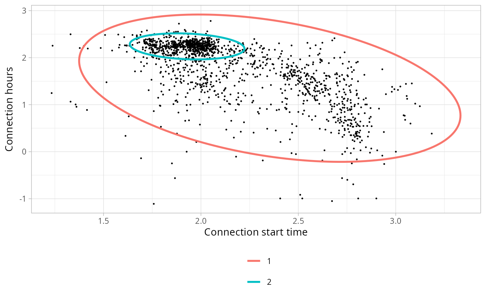

Joins all sub-sets from the list, adding a new column Profile
Arguments
- sessions_clustered
list of tibbles with sessions clustered (
sessionsobject of the output from functioncluser_sessions()) from each sub-set- clusters_definition
list of tibbles with clusters definitions (direct output from function
define_clusters()) of each sub-set
Examples
library(dplyr)
# Select working day sessions (`Timecycle == 1`) that
# disconnect the same day (`Disconnection == 1`)
sessions_day <- california_ev_sessions %>%
divide_by_timecycle(
months_cycles = list(1:12), # Not differentiation between months
wdays_cycles = list(1:5, 6:7) # Differentiation between workdays/weekends
) %>%
divide_by_disconnection(
division_hour = 10, start = 3
) %>%
filter(
Disconnection == 1, Timecycle == 1
) %>%
sample_frac(0.05)
#> The considered time-cycles are:
#>
#>
#> |Timecycle |months |wdays |
#> |:---------|:------|:-----|
#> |1 |1-12 |1-5 |
#> |2 |1-12 |6-7 |
# Identify two clusters
sessions_clusters <- cluster_sessions(
sessions_day, k=2, seed = 1234, log = TRUE
)
# Plot the clusters found
plot_bivarGMM(
sessions = sessions_clusters$sessions,
models = sessions_clusters$models,
log = TRUE, start = 3
)

# Define the clusters with user profile interpretations
clusters_definitions <- define_clusters(
models = sessions_clusters$models,
interpretations = c(
"Connections during working hours",
"Connections during all day (high variability)"
),
profile_names = c("Workers", "Visitors"),
log = TRUE
)
# Classify each session to the corresponding user profile
sessions_profiles <- set_profiles(
sessions_clustered = list(sessions_clusters$sessions),
clusters_definition = list(clusters_definitions)
)